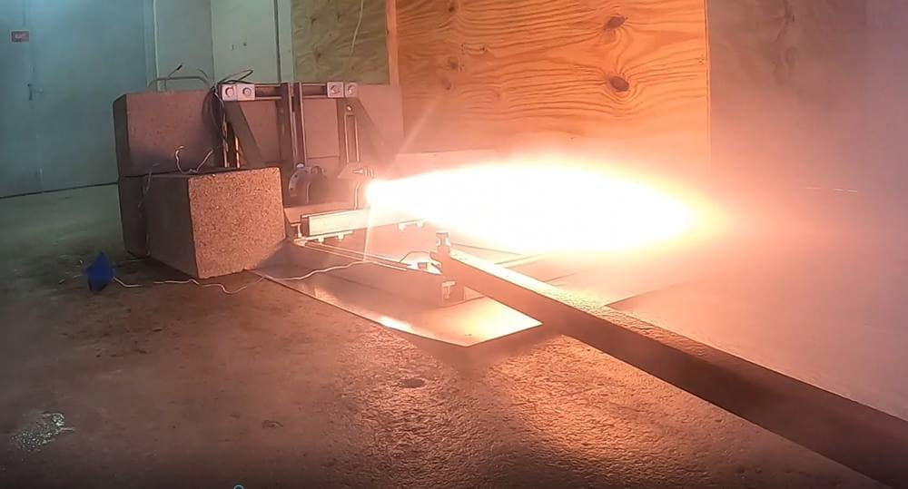
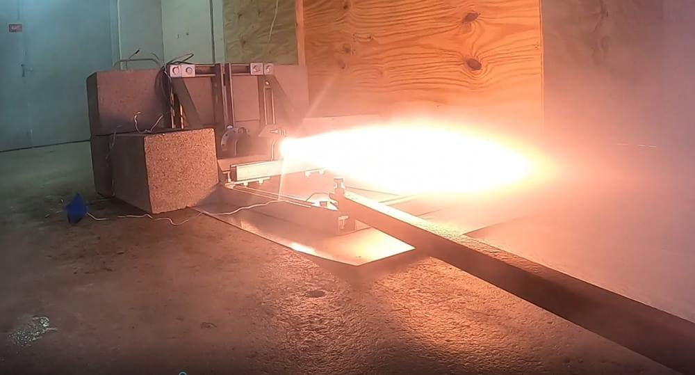
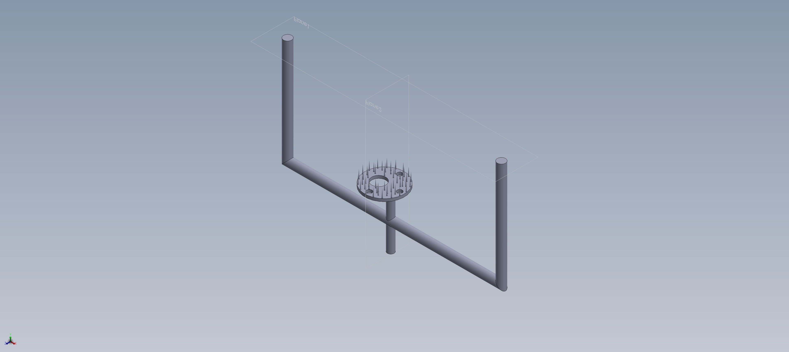
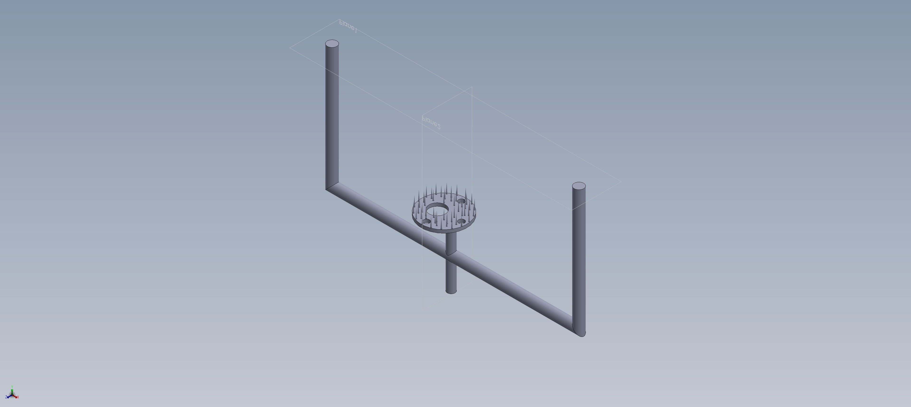

Projects
Avionics Box Structural and Thermal Analysis | Fuel Grinder - Rocket Prometheus (ERFSEDS) | MATLAB Fitness Progress Tracker | Travel Magnetic Makeup Brush Stand | Projectile Launcher | Basswood Bridge Design | Numerical Methods for ODEs
 


 

Collaborated with ERFSEDS teammates to design a fuel grinding mechanism for a project rocket. Explored multiple concepts, modeled assemblies, and considered safety, reliability, and integration with the larger propulsion system.


Developed a MATLAB tool to track workouts, diet plans, and body measurements over time. Implemented data validation, data storage, and plotting routines so users can monitor trends and progress toward fitness goals.

Designed a compact, travel-friendly magnetic brush stand featuring 13+ unique complex parts. Modeled parts, subassemblies, and the full assembly, then produced a full engineering drawing package following industry standards.


Designed and built a mechanical launcher to maximize range for a baseball. Combined SOLIDWORKS design with physical prototyping and experimental testing, then analyzed launch data for initial velocity, energy, and efficiency.

Constructed a basswood bridge under strict design constraints, targeting the highest possible load-to-weight ratio. Documented the design process, force versus displacement behavior, and failure modes during testing.

Implemented and compared numerical methods for solving ordinary differential equations, analyzing accuracy and stability. Visualized solution behavior and error trends using MATLAB.
Research
My research focuses on orbital debris, collision avoidance, risk modeling, and sustainable mission operations.
Conducted a comprehensive study on orbital debris growth, tracking limitations, collision risk modeling, and debris mitigation strategies for spacecraft operating in Low Earth Orbit (LEO). Integrated NASA’s DRAMA tool, SSA processes, conjunction assessment frameworks, and emerging technologies in autonomous avoidance.
- LEO debris population is increasing exponentially due to fragmentation events and mega-constellations.
- Collision risk grows significantly when spacecraft uncertainties overlap (“probability of collision” model).
- Maneuver planning becomes fuel-limited and time-sensitive when conjunction windows are short.
- Ground-based laser photon pressure can produce measurable delta-v (~1 cm/s) for debris displacement.
- Used NASA’s DRAMA framework to analyze conjunction frequency, atmospheric drag effects, and reentry survivability models.
- Evaluated covariance-based probability of collision (Pc) using position and velocity uncertainties.
- Compared threshold Pc values used by NASA and ESA for deciding automatic vs. manual avoidance maneuvers.
- Analyzed conjunction tables showing severity categories based on kinetic energy and breakup potential.
- Case-by-case maneuver planning using delta-v optimization and timeline constraints.
- Autonomous avoidance using linear programming for fast, low-fuel trajectory adjustments.
- Laser photon-pressure displacement for pushing small debris off collision paths.
- ESA debris mitigation practices: passivation, 25-year deorbit rule, fragmentation control.
You can flip through the presentation or download it below:
Résumé Overview
I’m pursuing dual Bachelor’s degrees in Aerospace Engineering (Rocket Propulsion Track) and Computational Mathematics (Engineering Application Track) at Embry-Riddle Aeronautical University, graduating in May 2027. Before transferring, I completed two Associate degrees at John Wood Community College while competing as a collegiate libero.
- Embry-Riddle Aeronautical University
- B.S. Aerospace Engineering (Rocket Propulsion) · May 2027
- B.S. Computational Mathematics (Engineering Application) · May 2027
- John Wood Community College
- A.S. Engineering Science (High Honors) · May 2024
- A.S. Science with Minor in Physics (Highest Honors) · May 2024
- Technical Skills: MATLAB, SOLIDWORKS, CATIA, LaTeX, MobaXterm, Microsoft Office
- Languages: Python, Java, HTML, CSS
- Leadership:
- ERAU: Treasurer Club Volleyball
- JWCC: Collegiate Libero, Vice President of Phi Theta Kappa, Vice President of S.T.E.M. Club, Selected to be on Student-Athlete Advisory Council
I also maintain a volleyball-focused résumé for athletics and coaching opportunities.
Awards & Honors
Highlighted Awards
- Gold Scholar – Coca-Cola Academic Team (National Level)
- All-USA Academic Team - Phi Theta Kappa
- All-Illinois Academic Team - Phi Theta Kapp
- NJCAA First Team Academic All-American Women's Volleyball
- Renewable Women of Excellence Scholarship
- Microsoft Office Specialist State Champion (Word & Excel)
Academic Honors
- Invited to Tau Beta Pi – Embry Riddle Aeronautical University
- Dean’s List – Embry Riddle Aeronautical University (Fall 2024)
- Dean’s List – John Wood Community College (All Semesters 2022–2024)
- Inducted into Phi Theta Kappa – Alpha Tau Gamma Chapter
Leadership & Service
- Elected Treasurer – ERAU Women’s & Men’s Club Volleyball (2025–2026)
- Vice President – Phi Theta Kappa (2023–2024)
- Vice President – S.T.E.M. Club (2023–2024)
- Student-Athlete Advisory Council – John Wood Community College (2022–2023)
Scholarships & Grants
- Women of Excellence Scholarship ($5,000 – Renewable)
- Embry-Riddle Transfer Scholarship ($15,000)
- Embry-Riddle Transfer Grant ($250)
- Athletic Scholarship – John Wood CC (2022–2023 · ¼ Tuition)
- TrailBlazer Scholarship – John Wood CC (2022–2023 · ½ Tuition)
- Athletic Scholarship – John Wood CC (2023–2024 · ¼ Tuition)
- TrailBlazer Scholarship – John Wood CC (2023–2024 · ½ Tuition)
- MSBA John T. Belcher Scholarship – School Representative (2022)
Athletic Achievements
- NJCAA Third Team Academic All-American – Women’s Volleyball (2022–2023)
- Recruited as Collegiate Volleyball Athlete – John Wood Community College (2022)
STEM & Technical Awards
- Missouri Cybersecurity Challenge – 4th Place (Preliminary Round)
- Missouri Cybersecurity Challenge – 7th in State (2022)
- Microsoft Office Specialist U.S. National Championship – Word (Participant)
- Microsoft Office Specialist State Champion – Word (2016)
- Microsoft Office Specialist State Champion – Excel (2016)
High School Honors
- Summa Cum Laude Graduate – Hallsville High School (2022)
- Gold Scholar – Hallsville High School (2022)
- National Student Leadership Conference – Aerospace Engineering Finalist (2021)
- National Student Leadership Conference – Aerospace Engineering Course Completion (2021)
About
Before transferring to Embry-Riddle, I earned two Associate degrees at John Wood Community College while competing as a collegiate libero and serving in multiple leadership roles, including Vice President of Phi Theta Kappa and S.T.E.M. Club. Now at ERAU, I’m the Treasurer for Club Volleyball and involved in organizations focused on space exploration and engineering.
Long term, I hope to work on propulsion and space systems that push the boundaries of what’s possible. I want to combine my background in rocket propulsion, computational mathematics, and structural analysis to help impact the next generation of astronautics.
Contact
I’m open to internships, research positions, and collaborations related to aerospace, propulsion, systems or structural analysis, and numerical methods.
- Email: crawfoc1@my.erau.edu
- LinkedIn: linkedin.com/in/clancy-crawford
- Location: Port Orange Daytona Beach, FL